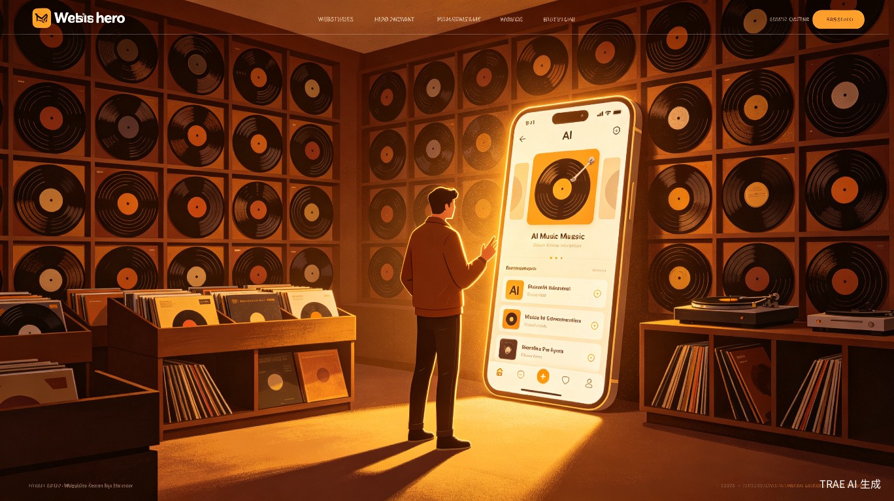
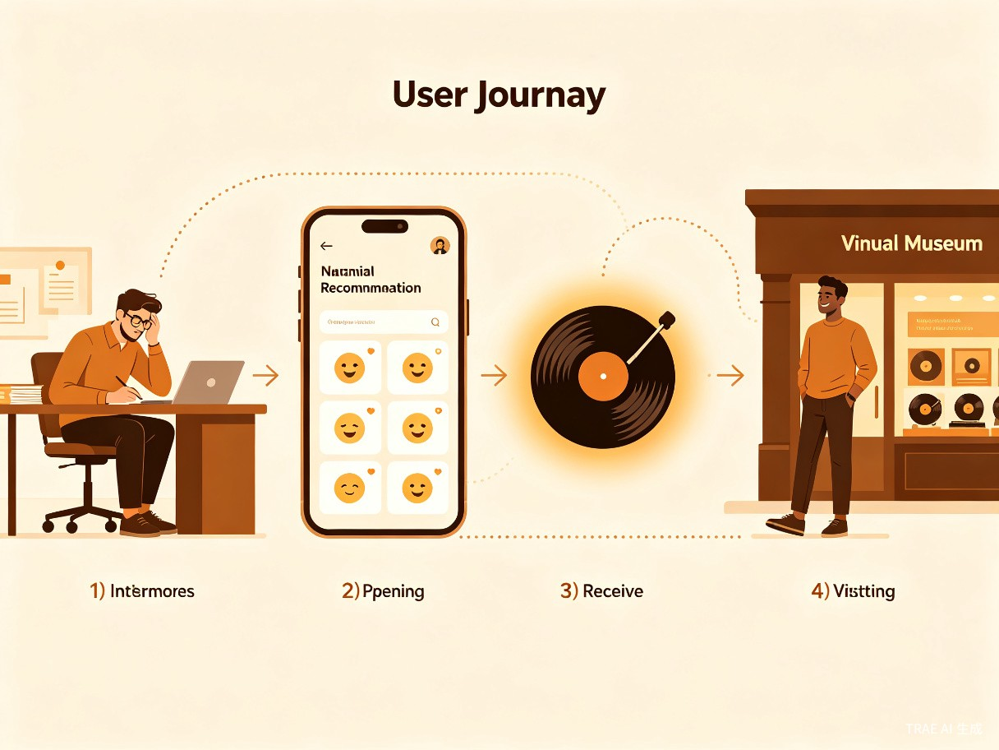
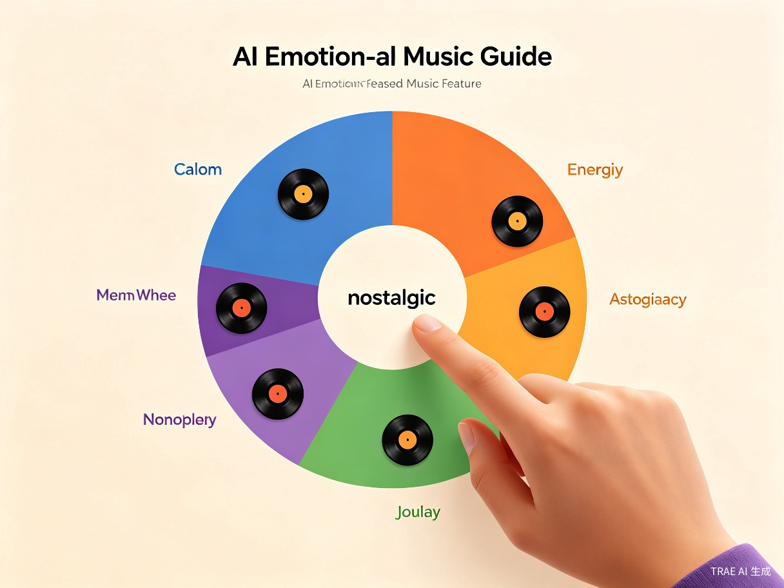

创意名称与介绍
想解决什么问题
黑胶声音博物馆拥有丰富的实体藏品资源，但到馆参观体验碎片化、推荐缺乏个性化、离馆后用户与博物馆之间几乎零连接。用户无法根据当下情绪快速找到"对的那张唱片"，博物馆也无法将一次性参观转化为持续的消费与复购关系。
为什么会想到做这个
灵感来源于一个真实场景：一位朋友在压力巨大的工作日走进黑胶博物馆，却不知道该听什么，最终只是走马观花地转了一圈就离开了。我们意识到，音乐的本质是情绪的共鸣，如果能让用户"按心情选唱片"，就能把被动的参观变成主动的疗愈体验。结合 AI 情绪识别与个性化推荐技术，我们希望为黑胶文化注入数字化的温度。
大概是什么产品
「此刻黑胶」是一套覆盖小程序 + APP + 网站三端的数字产品，以 AI 情绪导览和音乐疗愈为核心功能，为用户提供基于当下心情的黑胶藏品推荐、故事讲解、到店预约、消费积分与社交分享的一站式体验，同时帮助博物馆实现从"参观"到"复购"的运营闭环。
目标用户及痛点
面向哪些用户
音乐爱好者
热爱黑胶文化、复古美学，渴望深度了解唱片背后故事的年轻群体（18-35岁）
情绪疗愈需求者
工作压力大、生活节奏快，希望通过音乐获得情绪释放与心理舒缓的都市人群
文化体验消费者
喜欢打卡文化空间、追求独特体验的文旅消费群体，愿意为优质体验付费
博物馆运营方
希望提升到馆转化率、延长用户停留时间、建立数字化会员体系的场馆运营团队
在什么场景下使用

场景一：线上情绪疗愈。用户在通勤路上或睡前打开小程序，选择当前情绪（如"焦虑""孤独""怀旧"），AI 即时推荐一张契合心境的黑胶唱片，配有 3 分钟故事讲解和试听片段，完成一次微型的音乐疗愈。
场景二：到店沉浸体验。用户通过 APP 预约到馆时间，系统根据预约时填写的情绪偏好生成专属导览路线，到店后扫码跟随 AI 语音导览，在对应展位聆听唱片、阅读故事，体验高度个性化的参观。
场景三：消费与社交。参观结束后，用户在 APP 内购买推荐唱片或周边文创，分享"此刻歌单"到社交平台，获得积分奖励，形成"线上发现 - 到店体验 - 消费分享 - 再次到店"的闭环。
当前痛点
- 推荐缺失：博物馆展品丰富但缺乏个性化推荐机制，用户面对数百张唱片不知从何听起，体验效率低
- 情绪断层：现有导览以"年代/流派"为线索，无法响应用户当下的情绪需求，错失了音乐最核心的情感价值
- 连接断裂：用户离馆后与博物馆之间没有任何数字化触点，无法持续互动，复购率极低
- 运营粗放：博物馆缺乏用户画像数据，无法精准营销，会员体系不完善，难以将流量转化为留存
核心功能架构
AI 情绪导览引擎

用户通过情绪轮盘选择当前心情状态（如平静、焦虑、怀旧、喜悦、忧伤），系统基于情绪标签与黑胶藏品的音乐特征（BPM、调性、乐器编排、歌词情感分析）进行智能匹配，生成个性化推荐列表。每张推荐唱片配有 AI 生成的故事讲解，涵盖创作背景、历史轶事、情感解读。
三端产品矩阵
| 端 | 定位 | 核心功能 | 使用场景 |
|---|---|---|---|
| 微信小程序 | 轻量入口、快速触达 | 情绪选择、唱片推荐、故事试听、到店预约码 | 社交分享、碎片化时间疗愈 |
| APP | 深度体验、会员运营 | 完整导览路线、AR 唱片扫描、消费积分、个人歌单、社区互动 | 到店沉浸体验、深度用户留存 |
| 网站 | 品牌展示、内容沉淀 | 藏品数字档案、策展故事、在线商城、品牌合作入口 | 品牌传播、SEO 引流、商务合作 |
运营闭环设计
价值与意义
商业价值
「此刻黑胶」将博物馆从"一次性参观场所"升级为可持续运营的数字化商业体。通过三端产品矩阵，打通线上获客与线下消费的链路，预计可将到馆转化率提升 40% 以上，会员复购率提升 60%。线上商城与社交分享功能直接带动唱片及周边文创的销售增长，为博物馆创造稳定的增量收入。
社会价值
在快节奏的都市生活中，音乐疗愈正成为越来越重要的心理健康需求。「此刻黑胶」以黑胶文化为载体，将音乐疗愈从"小众概念"变为"大众可及"的日常体验，让更多人通过黑胶唱片找到情绪出口。同时，项目为传统黑胶文化注入了数字化生命力，帮助珍贵的音乐遗产以更年轻、更互动的方式被传承和传播。
"每一张黑胶唱片都封存着一段时代的情绪。我们要做的，是帮用户找到属于'此刻'的那一张。"
效率提升
AI 情绪导览大幅降低了用户在博物馆中的"选择成本"——从面对数百张唱片的迷茫，到 30 秒内获得精准推荐。对博物馆运营方而言，AI 导览替代了部分人工讲解工作，个性化推荐提升了展品的曝光效率，数字化预约系统优化了到馆客流管理。
技术亮点
AI 情绪识别
基于 NLP 情感分析与音乐特征提取的多模态匹配算法，精准连接用户情绪与唱片风格
AR 唱片扫描
APP 端支持 AR 扫描实体唱片封面，即时展示唱片故事、创作背景与试听入口
三端数据打通
小程序、APP、网站共享用户画像与行为数据，实现跨端无缝体验与统一会员体系
社交裂变
"此刻歌单"一键分享至微信/微博，好友扫码即可体验同款情绪导览，实现低成本获客
差异化优势
| 维度 | 传统博物馆导览 | 音乐流媒体 App | 此刻黑胶 |
|---|---|---|---|
| 推荐逻辑 | 固定路线 / 年代分类 | 算法推荐（行为驱动） | 情绪驱动 + AI 匹配 |
| 线下连接 | 有，但体验被动 | 无 | 线上推荐 → 到店导览 |
| 内容深度 | 基础展品信息 | 海量但浅层 | 每张唱片深度故事 |
| 运营闭环 | 门票收入为主 | 订阅制 | 预约+消费+分享+复购 |
| 文化载体 | 通用 | 数字音乐 | 黑胶实体 + 数字体验 |
未来展望
「此刻黑胶」的愿景不仅是一个博物馆的数字化工具，更是一个连接人与音乐情绪的智能平台。未来可拓展的方向包括：
多馆联动
接入更多黑胶/音乐主题博物馆，形成全国性的黑胶文化数字网络
音乐疗愈课程
联合心理学专家推出体系化的音乐疗愈课程，提升专业性与社会影响力
黑胶社区
构建黑胶爱好者社区，支持用户上传私藏唱片故事、组织线下听音会
品牌合作
与唱片厂牌、音响品牌、咖啡馆等跨界合作，拓展商业生态